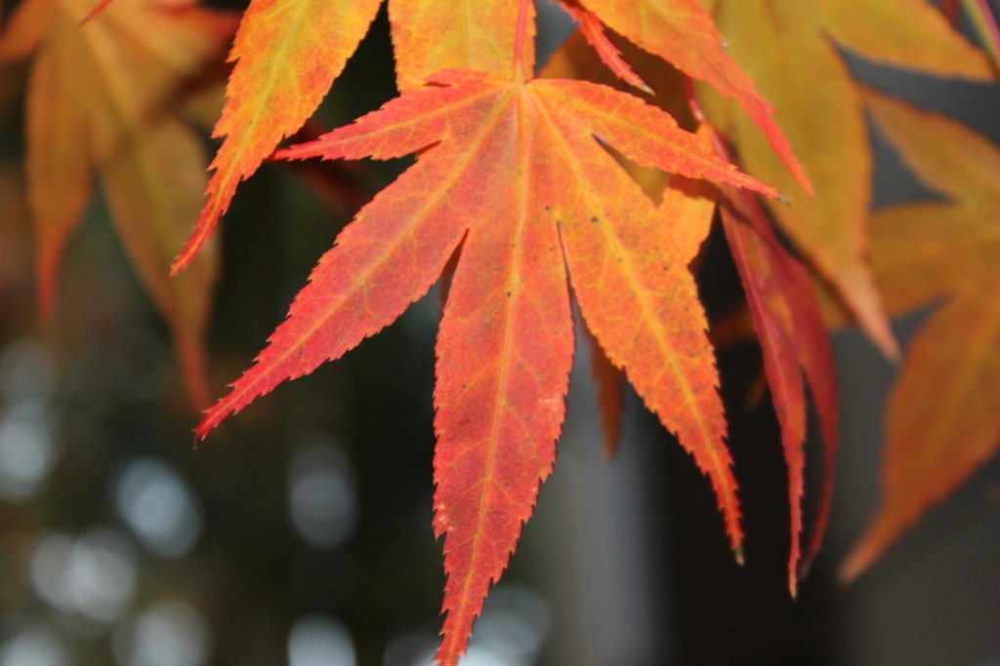
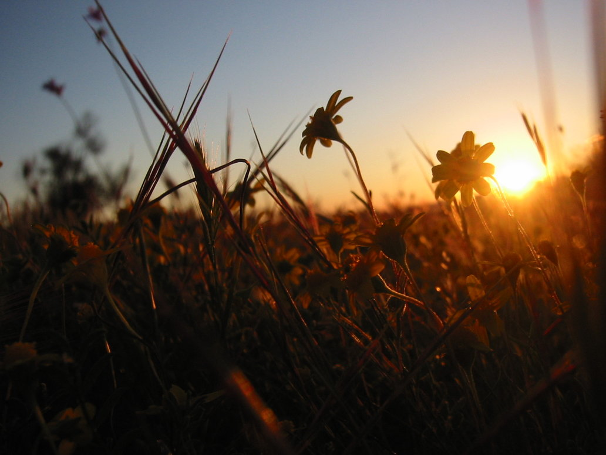
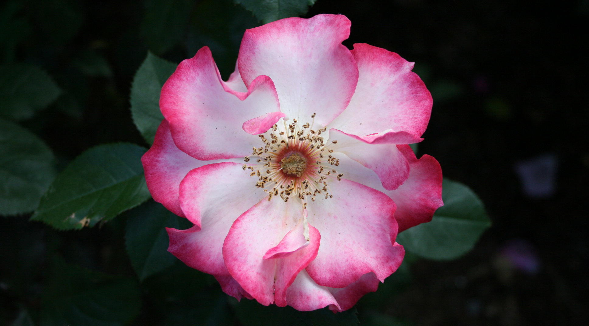
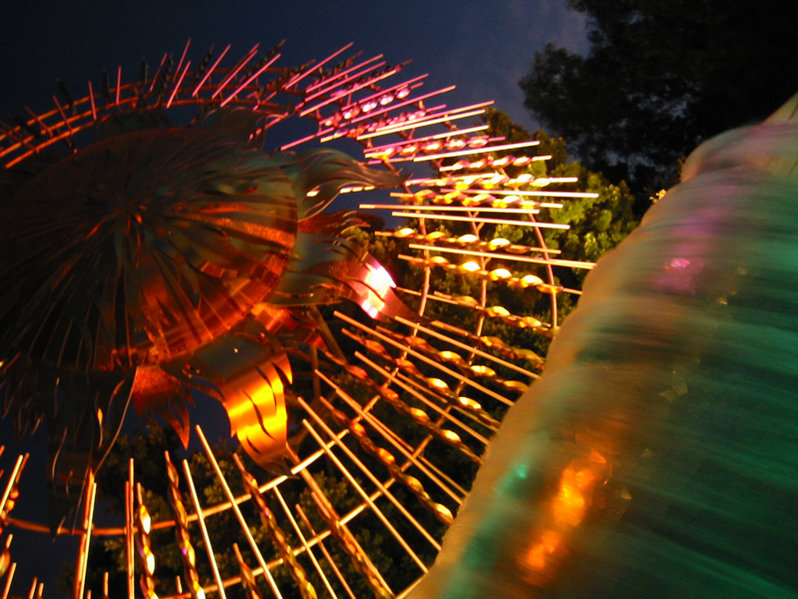
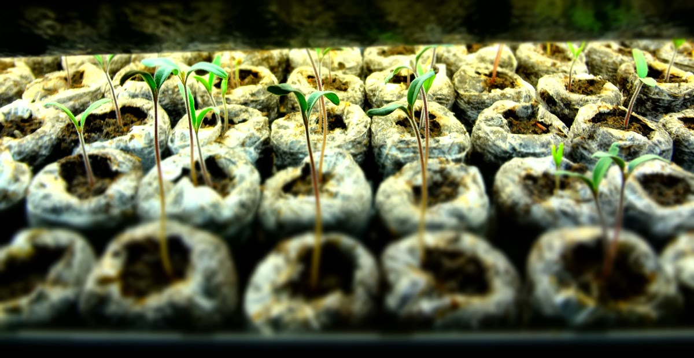

Angela of Freckled Canvas got my cross stitch that I finished for her over spring break! Thank you, USPS.
Angela of Freckled Canvas got my cross stitch that I finished for her over spring break! Thank you, USPS.
In the past and when I have free time, I like taking pictures of things. Here are a few examples below! Links are to my older-than-dirt Deviantart account. From time to time I get asked to ID plants for people there, so my Biology degree is doing good work.
Fall Color

Coreopsis Douglasii

Swirly Rose

Sunburst Fountain

My tomato seeds are sprouting! Check it:

I am trying out Jiffy Peat Pots this year. So far I have no complaints and they are a lot cheaper than the ones I tried last year that were made of unicorn horn shavings and free frange coconuts. Time will tell, but hopefully in the next few months I will be drowning in tomatoes.